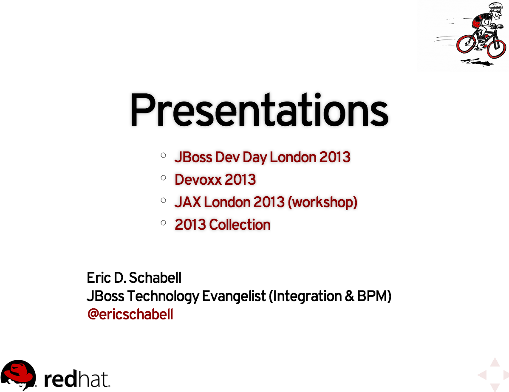

University timeline
- Part I
- Taking the xPaaS tour
- Tooling
- Into the Cloud
- 30 minute break
- Part II (15:15 - 16:30)
- Learning PaaS
- Mastering xPaaS
Learning PaaS
- PHP
- Ruby
- Java
- Python
- Node.js
- Perl
PaaS: PHP
Some options...
PaaS: PHP
Hosting a workshop
$ rhc app create bpmworkshop -t php-5.4 --from-code git://github.com/eschabell/openshift-bpmsuite-workshop.githttp://bpmworkshop-$your_domain.rhcloud.com

PaaS: Ruby
Some options...
PaaS: Ruby
Online Awestruct presentations
$ rhc app create presos -t ruby-1.9 --from-code git://github.com/eschabell/openshift-presos-awstruct.githttp://presos-$your_domain.rhcloud.com

PaaS: Ruby
Rail development...
- Quickstarts online offer easiest setup
- Or do it by hand with OpenShift Rails example project
PaaS: Java
Some options...
PaaS: Java community
JBoss jBPM migration project
$ rhc app create jbpmmigration -t jbossas-7 --from-code git://github.com/eschabell/openshift-jbpmmigration.githttp://jbpmmigration-$your_domain.rhcloud.com/jbpmmigration_upload-0.6

PaaS: Java community
Now with WildFly...
$ rhc app create jbpmwildfly -t wildfly -n $new-domain- Push jbpmmigration_upload-6.0.war to depoloyments directory
$ cp jbpmmigration_upload-6.0.war jbpmwildfly/deployments$ git add jbpmwildfly/deployments$ git commit -m "Added web archive."; git pushhttp://jbpmwildfly-$your_domain.rhcloud.com/jbpmmigration_upload-0.6
Mastering xPaaS
- aPaaS
- mPaaS
- iPaaS
- bpmPaaS
aPaaS: Java Enterprise
JBoss EAP & Business Optimizer Demo
$ rhc app create optimizer -t jbosseap-6$ cd optimizer$ git remote add upstream -m master git://github.com/eschabell/openshift-business-resource-optimizer.git$ git pull -s recursive -X theirs upstream mastergit pushhttp://optimizer-$your_domain.rhcloud.com/optaplanner-webexamples-6.0.0-redhat-6

mPaaS: Java Mobile
TODO: JBoss Aerogear + Devoxx Mobile Registration
$ rhc app create -t jbosseap-6 jaxlondon$ cd jaxlondon$ git remote add upstream -m master git://github.com/eschabell/openshift-jaxlondon.git$ git pull -s recursive -X theirs upstream master$ git pushhttp://jaxlondon-$your_domain.rhcloud.com

iPaaS: Java Integration
TODO: JBoss Fuse
- Featured xPaaS via the web console
iPaaS: Data Integration
JBoss DV
- Featured xPaaS via web cosole
brmsPaaS: JBoss BRMS
Rules and events
- The Cool Store example project
bpmPaaS: JBoss BPM Suite
Rules, events and processes
- Featured xPaaS via web cosole
- Many example cartridges / projects...
Loving Your Hammers?


- OpenShift Primer Workshop - http://presos-onthe.rhcloud.com
- OpenShift - http://openshift.redhat.com
- Blogs - https://www.redhat.com/openshift/community/blogs
- Repository for all OpenShift demos shown here - https://github.com/eschabell
- OpenShift demo repository - https://github.com/openshift
- Rise above the Cloud hype with OpenShift - http://www.schabell.org/2012/01/rise-above-cloud-hype-with-openshift.html